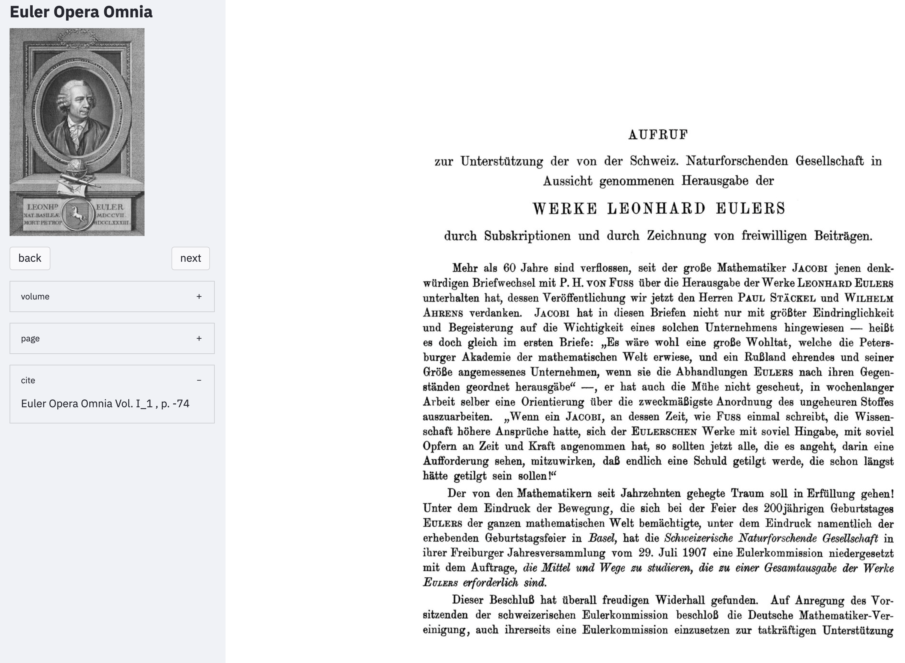

8 Zitate, Zitieren, Verweise
8.1 Zitieren der Euler Opera Omnia Bände
Alle Stellen aus dem Gesamtwerk Eulers können über die originale Paginierung zitiert werden. Grundlegend sind dabei zwei Bezugsquellen:
(1) Die Werke und Seiten der Euler Opera Omnia
(2) Werke und Seiten nach der ursprünglichen Quelle
8.2 Zitieren mit Bibliographieprogrammen
8.3 Zitieren über mit maschinenlesbare API
8.4 Zitierfähige Seiten des gesamten Werks Eulers
